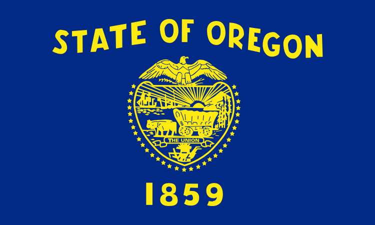

Portland is a seaport and the largest city in the U.S. state of Oregon and the seat of Multnomah County. It is in the Willamette Valley region of the Pacific Northwest, at the confluence of the Willamette and Columbia Rivers. The city covers 145 square miles (380 square kilometers) and had an estimated population of 632,309 in 2015, making it the 26th most populous city in the United States. Approximately 2,389,228 people live in the Portland metropolitan statistical area (MSA), the 23rd most populous MSA in the United States. Its Combined Statistical Area (CSA) ranks 17th with a population of 3,022,178. Roughly 60% of Oregon's population resides within the Portland metropolitan area.
Named after Portland, Maine, the Oregon settlement began to be populated in the 1830s near the end of the Oregon Trail. Its water access provided convenient transportation of goods, and the timber industry was a major force in the city's early economy. At the turn of the 20th century, the city had a reputation as one of the most dangerous port cities in the world, a hub for organized crime and racketeering.
After the city's economy experienced an industrial boom during World War II, its hard-edged reputation began to dissipate. Beginning in the 1960s, Portland became noted for its growing liberal political values, and the city has earned a reputation as a bastion of counterculture, which proceeded into the 21st century. According to a 2009 Pew Research Center study, Portland ranks as the eighth most popular American city, based on where people want to live.
Corvallis is a city in central western Oregon, United States. It is the county seat of Benton County and the principal city of the Corvallis, Oregon Metropolitan Statistical Area, which encompasses all of Benton County. As of the 2010 United States Census, the population was 54,462. Its population was estimated by the Portland Research Center to be 55,298 in 2013.Corvallis is the location of Oregon State University, a large Hewlett-Packard research campus, and Good Samaritan Regional Medical Center.
In October 1845, Joseph C. Avery arrived in Oregon from the east. Avery took out a land claim at the mouth of Marys River where it flows into the Willamette River and in June 1846 took up residence there in a log cabin hastily constructed to hold what seemed a potentially lucrative claim. Avery's primitive 1846 dwelling was the first home within the boundaries of today's Corvallis and his land claim included the southern section of the contemporary city.
Corvallis is the largest principal city of the Albany-Corvallis-Lebanon CSA, a Combined Statistical Area that includes the Corvallis metropolitan area (Benton County) and the Albany-Lebanon micropolitan area (Linn County),which had a combined population of 202,251 at the 2010 U.S. Census. As of the 2000 U.S. Census the median income for a household in the city was $35,437, and the median income for a family was $53,208. Males had a median income of $40,770 versus $29,390 for females. The per capita income for the city was $19,317. About 9.7% of families and 20.6% of the population were below the poverty line, including 15.2% of those under age 18 and 6.0% of those age 65 or over.
Eugene is a city of the Pacific Northwest located in the U.S. state of Oregon. It is located at the southern end of the Willamette Valley, near the confluence of the McKenzie and Willamette Rivers, about 50 miles (80 km) east of the Oregon Coast.
As of the 2010 census, Eugene had a population of 156,185; it is the second most populous city in the state (after Portland) and the county seat of Lane County. The Eugene-Springfield, Oregon metropolitan statistical area (MSA) is the 146th largest metropolitan statistical area in the US and the third-largest in the state, behind the Portland Metropolitan Area and the Salem Metropolitan Area. The city's population for 2014 was estimated to be 160,561 by the US Census.
Eugene is home to the University of Oregon and Lane Community College. The city is also noted for its natural beauty, recreational opportunities (especially bicycling, running/jogging, rafting, and kayaking), and focus on the arts. Eugene's official slogan is "A Great City for the Arts and Outdoors". It is also referred to as the "Emerald City" and as "Track Town, USA". The Nike corporation had its beginnings in Eugene. In 2021, the city will host the 18th Track and Field World Championships.
Salem is the capital of the U.S. state of Oregon, and the county seat of Marion County. It is located in the center of the Willamette Valley alongside the Willamette River, which runs north through the city. The river forms the boundary between Marion and Polk counties, and the city neighborhood of West Salem is in Polk County. Salem was founded in 1842, became the capital of the Oregon Territory in 1851, and was incorporated in 1857.
Salem had a population of 154,637 at the 2010 census, making it the third largest city in the state after Portland and Eugene. Salem is less than an hour driving distance away from Portland. Salem is the principal city of the Salem Metropolitan Statistical Area, a metropolitan area that covers Marion and Polk counties and had a combined population of 390,738 at the 2010 census. A 2013 estimate placed the metropolitan population at 400,408, the state's second largest.
The city is home to Willamette University, Corban University, and Chemeketa Community College. The State of Oregon is the largest public employer in the city, and Salem Health is the largest private employer. Transportation includes public transit from Salem-Keizer Transit, Amtrak service, and non-commercial air travel at McNary Field. Major roads include Interstate 5, Oregon Route 99E, and Oregon Route 22, which connects West Salem across the Willamette River via the Marion Street and Center Street bridges.
Bend is a city in, and the county seat of Deschutes County, Oregon, United States. It is the principal city of the Bend, Oregon Metropolitan Statistical Area. Bend is Central Oregon's largest city, and despite its modest size, is the de facto metropolis of the region, owing to the low population density of that area. Bend recorded a population of 76,693 at the time of the 2010 U.S. Census, up from 52,029 at the 2000 census. The estimated population of the city as of 2013 is 81,236. Bend's metro population was estimated at 165,954 as of July 1, 2013. The Bend MSA is the fifth largest metropolitan area in Oregon.
Bend is located on the eastern edge of the Cascade Range along the Deschutes River. Here the Ponderosa Pine forest transitions into the high desert, characterized by arid land, junipers, sagebrush, and bitter-brush. Originally a crossing point on the river, settlement began in the early 1900s. Bend was incorporated as a city in 1905. Economically, it started as a logging town but is now identified as a gateway for many outdoor sports, including mountain biking, fishing, hiking, camping, rock climbing, white-water rafting, skiing, paragliding and golf. In 2015, Men's Journal ranked Bend as one of The 10 Best Places to Live Now.
Oregon was inhabited by many indigenous tribes before Western traders, explorers, and settlers arrived. An autonomous government was formed in the Oregon Country in 1843 before the Oregon Territory was created in 1848. Oregon became the 33rd state on February 14, 1859. Today, at 98,000 square miles (255,000 km²), Oregon is the ninth largest and, with a population of 4 million, 27th most populous U.S. state. The capital of Oregon is Salem, the second most populous of its cities, with 164,549 residents. Portland is Oregon's most populous city, with 632,309 residents, and ranks as the 26th most populous city in the United States. Portland's metro population of 2,389,228 ranks the 23rd largest metro in the nation. The Willamette Valley in western Oregon is the state's most densely populated area, home to eight of the ten most populous cities.
Oregon's landscape is diverse, with a windswept Pacific coastline; a volcano-studded Cascade Range; abundant bodies of water in and west of the Cascades; dense evergreen, mixed, and deciduous forests at lower elevations; and a high desert sprawling across much of its east all the way to the Great Basin.